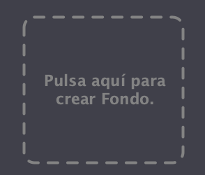

El Arkanoid es un divertido que exige unos reflejos rápidos. Usa física, colisiones y efectos especiales para entretener al jugador.
Se moverá de izquierda a derecha y no podrá atravesar las paredes.
El Ball rebotará en el Paddle, los bloques y las tiles.
Los Bloques que cambiarán de color y harán un sonido cuando la bola colisione con ellas. Y si le damos una segunda vez se eliminara el bloque y puntuara.
El Escenario tendrá 2 capas. La 0 sera donde dibujaremos el borde con la tiles y el Background que pondremos el fondo que tenemos en el juego.
Siempre tiene que estar la capa 0 en la primera posición empezando por arriba, ya que es donde dibujaremos y añadiremos nuestras Entidades.
El juego consiste en que el Paddle se moverá con las flechas derecha e izquierda.
La pelota empezara a moverse cuando presionemos la tecla espacio e ira rebotando con el Paddle, Bloque y Tiles. Tendremos 3 pelotas disponibles
para poder jugar. Solo podra salir otra pelota cuando la anterior haya salido de la escena.
Los Bloques tendrán 2 vidas. La primera vez que le de la pelota cambiara de color y la segunda vez se eliminara el Bloque y puntuara.
El Juego terminara cuando ya no tengamos más vidas o cuando hallamos acabado con todos los bloques.
Creamos un Escenario con la anchura y altura que ponga por defecto.
Lo primero que necesitamos son las Tiles y el Fondo, asi que tendremos que añadir al proyecto dentro de Fondos y Set de baldosas.
Para añadir el Fondo damos a Biblioteca/Fondos y damos al botón.
